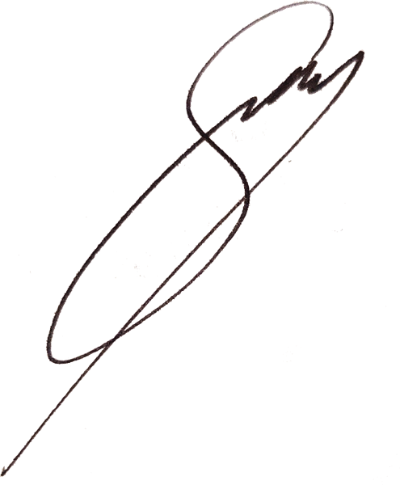

Escuela de Astrología
Seba Bru
Seba Bru
Certificado de Formación
Este certificado acredita que
Ha completado el curso
en la Escuela de Astrología de Seba Bru, y tiene los conocimientos
suficientes para desplegarse felizmente en su rol de
en la Escuela de Astrología de Seba Bru, y tiene los conocimientos
suficientes para desplegarse felizmente en su rol de
Ha completado su formación en la Escuela de Astrología de Seba Bru,
cursando un total de 4 años y adquiriendo conocimientos profundos
sobre la carta fija y la carta en movimiento.
Este saber le permite desplegarse felizmente en su rol de
cursando un total de 4 años y adquiriendo conocimientos profundos
sobre la carta fija y la carta en movimiento.
Este saber le permite desplegarse felizmente en su rol de
DNI:
Certificado Nº

Sebastián Bru
Director y docente